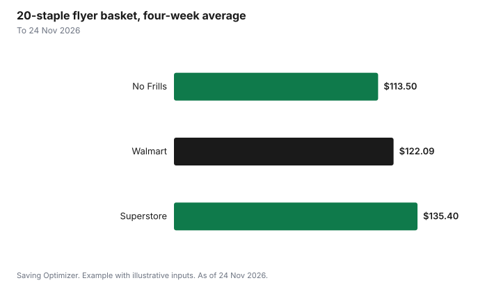

Food & Groceries · Canada
Great Value vs No Name: Walmart and Loblaw Generics Compared for Staples

Neither generic wins every time. Great Value and No Name are both built to be the cheapest item on the shelf, and the difference usually comes down to package size and that week's flyer. Compare the unit price on the shelf tag, and buy the bigger size only if you'll use it. In one recent four-week comparison, a basket of 20 staples was cheapest at No Frills.
Key takeaways
- Great Value flour, 2.5 kg: $3.77, or 15 cents per 100 g (Walmart.ca, checked 24 Nov 2026).
- No Name flour, 10 kg: $13.00, or 13 cents per 100 g (Loblaws, checked 24 Nov 2026).
- The bigger bag wins on unit price, but only if you use it before it goes stale.
- A 20-staple flyer basket averaged $113.50 at No Frills vs $122.09 at Walmart.
- President's Choice is Loblaw's higher-end brand; compare Great Value with No Name.
Unit prices
| Item | Price | Unit price |
|---|---|---|
| Great Value unbleached all-purpose flour, 2.5 kg (Walmart.ca) | $3.77 | 15 cents per 100 g |
| No Name all-purpose flour, 10 kg (Loblaws) | $13.00 | 13 cents per 100 g |
| No Name granulated sugar, 2 kg (Loblaws) | $3.49 | 17 cents per 100 g |
Prices vary by store and region, and online prices can differ from the shelf.
Basket comparison
CartIQ prices the same 20 staples in each chain's flyers every week. Over the four weeks to 24 Nov 2026, the basket averaged $113.50 at No Frills, $122.09 at Walmart and $135.40 at Real Canadian Superstore across the regions it tracks.

How to choose each week
- Read the unit price on the shelf tag.
- Compare the same size where you can.
- Check both flyers; either generic can be on sale.
- Price match where the store allows it (Walmart doesn't match competitors).
- Stick with a brand only where you notice a quality difference.
See how to read unit prices and No Name vs PC vs Compliments.
Sources
- Walmart.ca, Great Value Unbleached All-Purpose Flour 2.5 kg, checked 24 Nov 2026.
- Loblaws, Baking Essentials (No Name All-Purpose Flour 10 kg, Granulated Sugar 2 kg), checked 24 Nov 2026.
- CartIQ, Superstore vs Walmart: Which Is Cheaper in Canada? (updated 24 Nov 2026), checked 24 Nov 2026.
Frequently asked questions
Is Great Value cheaper than No Name?
It depends on the item, size and week. Compare unit prices on the shelf tag.
Is No Name the same quality as Great Value?
Both are budget store brands. Quality varies by product, so try both for your staples.
Is President's Choice a generic brand?
President's Choice is Loblaw's higher-end brand. No Name is its budget brand.
Where is No Name sold?
At Loblaw stores such as No Frills, Real Canadian Superstore and Loblaws.
Does Walmart price match No Name prices?
No. Walmart Canada ended competitor ad matching in 2020.
Researched and drafted with AI assistance and fact-checked against official Canadian sources. How we create content.
Note: Prices change weekly and vary by store. Education only.